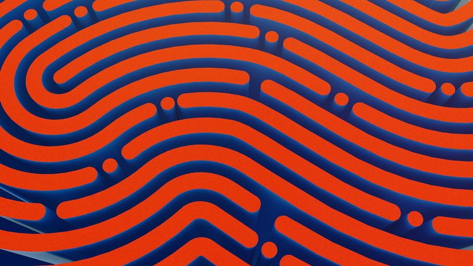

Introduction
In the rapidly evolving landscape of Artificial Intelligence (AI), the importance of AI safety and compliance cannot be overstated. As AI continues to permeate every facet of our lives, it brings with it a host of challenges and risks that need to be effectively managed. From data protection and privacy concerns to the potential for worker exploitation and unchecked corporate power, the risks associated with AI are real and significant [1].
The National Institute of Standards and Technology (NIST) has even warned that if left unchecked, AI has the potential to harm people, organizations, and even ecosystems [2]. This underscores the urgent need for robust AI safety measures and stringent compliance regulations.
In this blog post, we will delve into the concepts of Responsible AI and AI Alignment. Responsible AI refers to the ethical use of AI, ensuring that it is developed and used in a manner that is beneficial to all and does not cause harm. AI Alignment, on the other hand, is about ensuring that the goals of AI systems are aligned with human values and ethics.
Staying updated with the latest research in these areas is crucial for anyone involved in the field of AI. The Biden Administration, for instance, has recently announced new efforts focused on AI research and development, emphasizing the need for an updated roadmap for AI safety [3]. Similarly, the recent U.S. blueprint aims to protect society from harmful AI, reminding all developers and users of AI models that they need to build safe and effective systems [4].
In the following sections, we will explore these concepts in more detail, drawing on the latest research and real-world examples to provide a comprehensive overview of AI safety, Responsible AI, and AI Alignment.
Understanding AI Safety
AI safety is an interdisciplinary field that is concerned with preventing accidents and misuse of AI systems. It involves ensuring that AI is developed and deployed in ways that won’t harm individuals, organizations, or society at large [5]. The field covers technical aspects of creating safe AI systems, as well as broader strategic considerations [6].
Simply put, AI safety research is a discipline broadly defined as the effort to ensure AI is developed and deployed in ways that won’t harm individuals, organizations, or society at large [7]. It is a critical area of study because the risks associated with AI, such as data protection and privacy issues, worker exploitation, bias, and unchecked corporate power, can be exacerbated if not properly managed [8].
AI safety research is a broad, interdisciplinary field. It involves working as a scientist or engineer at major AI labs, in academia, or in independent nonprofits [9]. Some of the latest research in AI safety is being conducted at institutions like the Stanford Center for AI Safety and the Center for AI Safety (CAIS) [10], [11]. These institutions aim to develop methodologies to anticipate the impacts of new AI technologies and present a nuanced picture of future AI safety issues [12].
Creating an AI safety culture is necessary in all stages of machine learning (ML) development, from data gathering to product deployment. This involves implementing safety measures and checks at every stage of the AI development process to ensure that the final product is safe for use [13].
Despite the importance of AI safety, there are numerous challenges in ensuring it. These include technical challenges related to the complexity of AI systems, ethical challenges related to bias and fairness, and regulatory challenges related to the lack of comprehensive AI safety laws and regulations. To overcome these challenges, a combination of technical solutions, ethical guidelines, and regulatory measures is needed. Research institutions like the Machine Intelligence Research Institute are conducting technical research aimed at ensuring that smarter-than-human AI systems have a positive impact on the world [14].
The Concept of Responsible AI
Responsible AI is a concept that emphasizes the ethical use of AI. It involves developing and using AI in a manner that is beneficial to all and does not cause harm. This includes ensuring fairness, transparency, privacy, and accountability in AI systems [15].
Responsible AI refers to the practice of designing, building, and deploying AI in a manner that respects human rights, societal values, and the overall well-being of all stakeholders. It is a critical area of study because of the potential for AI to have significant impacts on society, both positive and negative. Both Google and Microsoft have committed to developing and using artificial intelligence responsibly, guided by a set of AI principles [16][17].
Responsible AI is a broad concept that encompasses several key principles:
Fairness: AI systems should be designed and used in a way that treats all individuals and groups fairly. This means avoiding biases in decision-making and ensuring that the benefits of AI are accessible to everyone.
Transparency: AI systems should be transparent in their operations. Users should be able to understand how an AI system works, how decisions are made, and what data is used.
Accountability: There should be clear accountability for the outcomes of AI systems. This includes both the developers who create the AI and the organizations that deploy it.
Privacy: AI systems should respect the privacy of individuals. This includes protecting personal data and using data in a way that respects individual privacy rights.
Security: AI systems should be secure and resilient. They should be designed to resist attacks and function correctly even in adverse conditions.
Human-Centric: AI systems should be designed with human values and well-being in mind. They should augment human capabilities and should always be under human control.
Inclusivity: AI systems should be inclusive and accessible to all users. They should be designed with diverse user needs in mind and should not exclude any group of users.
Reliability: AI systems should be reliable and function as intended. They should be rigorously tested and monitored to ensure they perform correctly.
These principles guide the development and use of AI in a way that respects human rights, societal values, and the overall well-being of all stakeholders. They are intended to ensure that AI is used responsibly and ethically, and that it benefits all of society.